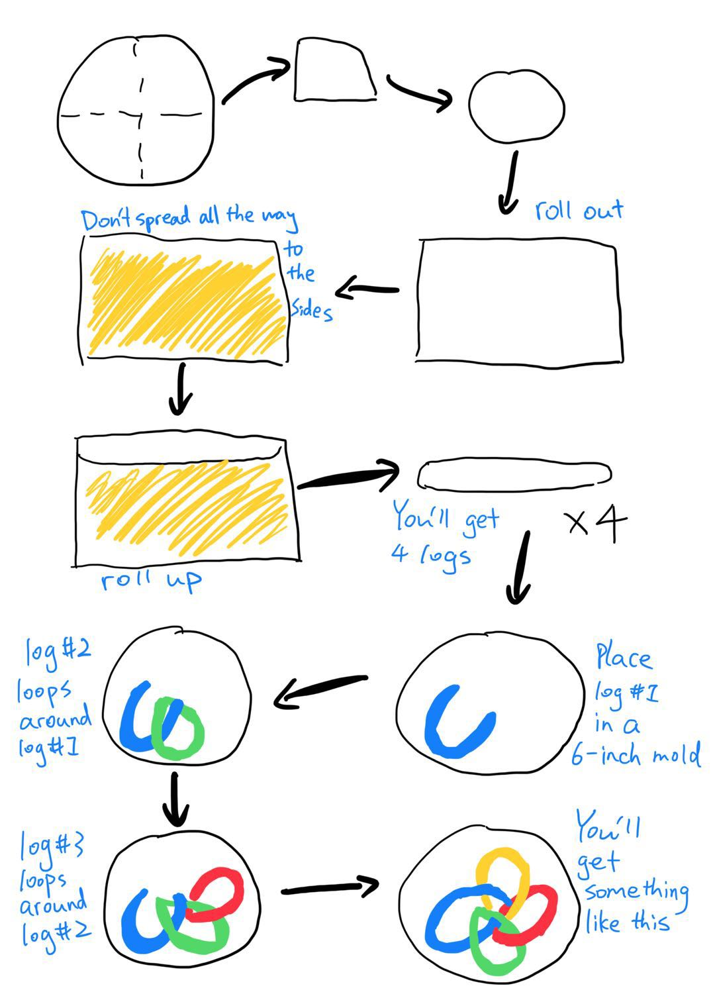

- Flour 450g
- Water 200g
- Yeast 2g
- Olive Oil 24g
- Some sugar and salt
- 8 cloves of garlic
- Unsalted butter (room temp) 40g
- Salt 4g
Ingredients
- Combine the first five ingredients and knead to a dough. Cover and prove until doubled in size.
- Combine garlic, butter, and salt to form the filling.
- Divide dough into four parts.
- For each part of the dough, roll out to a rectangle.
- Spread the filling onto the rectangle and roll. You will get four logs that are about the same length.
- Shape the bread following the illustrated instructions.
- Prove for another 1 hour and brush on some eggwash.
- Bake at a preheated oven at 200℃ for 25 to 30 minutes.
Process

Things to read before you start making this recipe
Don't worry if you don't have a 6-inch mold, I'll teach you how to make one using aluminium foil and cardboards. (I made this bread using my homemade mold and it turned out great) First, cut out two 25 by 10 cm rectangles from a cereal box. Then wrap a piece of aluminium foil around them. Next, staple the sides and you have a mold! However, the baking time might change a little since foil is not a great heat conductor. Do the second prove inside the mold and bake with the mold for about 10 minutes. Then take off the mold and bake for another 20 to 25 minutes or until golden brown.